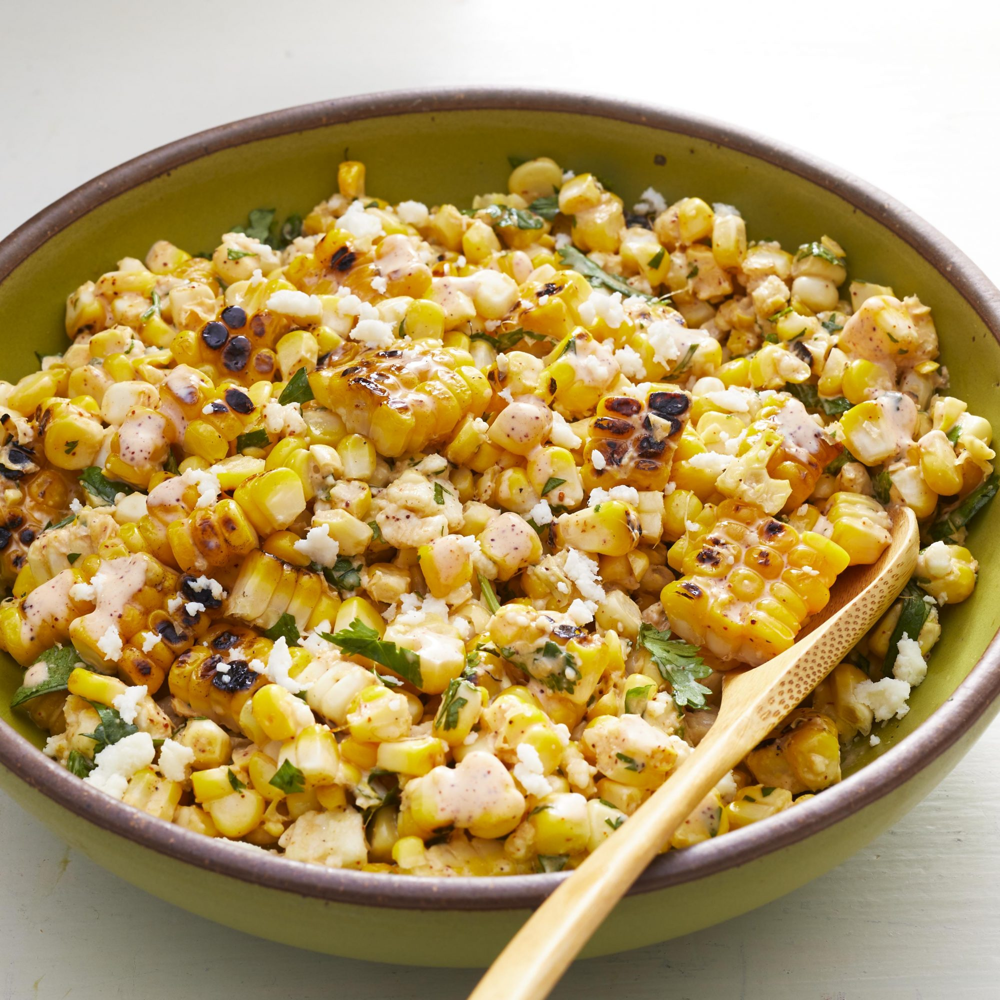

Description
A nice way to have elote without having to eat it off the husk. A favorite of mine since childhood and the perfect treat on a warm evening.
Recipe
Ingredients
- 6 ears corn in the husk
- ½ cup of mayonnaise
- 1 lime, juiced
- 1 tsp. hot sauce
- ½ tsp. chile powder
- ½ tsp. smoked paprika
- ½ cup crumbled Cotija cheese
- ½ cup coarsely chopped cilantro
- 3 scallions, sliced
Steps
- Soak corn in cold water for at least 1 hour.
- Mix mayonnaise, lime juice, hot sauce, chile powder, and paprika together in a bowl. Refrigerate chile-lime mayonnaise.
- Preheat an outdoor grill for medium heat and lightly oil the grate. Drain corn and grill away from the heat source, 15 to 20 minutes. Let cool until easily handled. Shuck corn and return to the grill; cook over the heat source until lightly charred, 3 to 5 minutes. Remove and let cool.
- Cut kernels off the cob. Combine corn kernels, Cotija cheese, cilantro, and scallions in a large bowl. Fold in chile-lime mayonnaise.
Return to top
Return to home